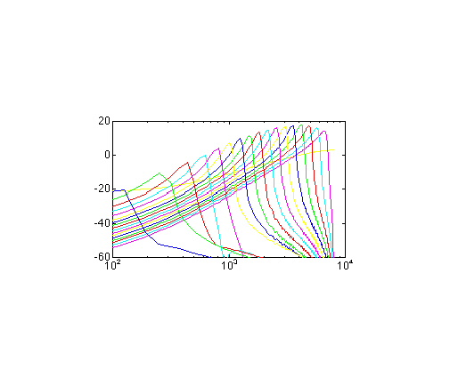

|
Auditory Toolbox
|
|
|
Version 2
|
|
|
Malcolm Slaney |
|
Technical Report #1998-010
|
|
|
Interval Research Corporation
|
|
|
malcolm@interval.com
|
|

What is the Auditory Toolbox?
This report describes a collection of tools that implement several popular
auditory models for a numerical programming environment called MATLAB.
This toolbox will be useful to researchers that are interested in how the
auditory periphery works and want to compare and test their theories. This
toolbox will also be useful to speech and auditory engineers who want to
see how the human auditory system represents sounds.
This version of the toolbox fixes several bugs, especially in the Gammatone
and MFCC implementations, and adds several new functions. This report was
previously published as Apple Computer Technical Report #45. We appreciate
receiving permission from Apple Computer to republish their code and to
update this package.
There are many ways to describe and represent sounds. The figure below
shows one taxonomy based on signal dimensionality. A simple waveform is
a one-dimensional representation of sound. The two-dimensional representation
describes the acoustic signal as a time-frequency image. This is the typical
approach for sound and speech analysis. This toolbox includes conventional
tools such as the short-time-Fourier-Transform (STFT or Spectrogram) and
several cochlear models that estimate auditory nerve firing “probabilities”
as a function of time. Finally, the next level of abstraction is to summarize
the periodicities of the cochlear output with the correlogram. The correlogram
provides a powerful representation that makes it easier to understand multiple
sounds and to perform auditory scene analysis.
What does the Auditory Toolbox contain?
Six types of auditory time-frequency representations are implemented in
this toolbox:
-
Richard F. Lyon has described an auditory model based on a transmission
line model of the basilar membrane and followed by several stages of adaptation.
This model can represent sound at either a fine time scale (probabilities
of an auditory nerve firing) or at the longer time scales characteristic
of the spectrogram or MFCC analysis. The LyonPassiveEar command
implements this particular ear model.
-
Roy Patterson has proposed a model of psychoacoustic filtering based
on critical bands. This auditory front-end combines a Gammatone filter
bank with a model of hair cell dynamics proposed by Ray Meddis. This auditory
model is implemented using the MakeERBFilters, ERBFilterBank,
and MeddisHairCell commands.
-
Stephanie Seneff has described a cochlear model that combines a critical
band filterbank with models of detection and automatic gain control. This
toolbox implements stages I and II of her model.
-
Conventional FFT analysis is represented using the spectrogram. Both narrow
band and wide band spectrograms are possible. See the spectrogram command
for more information.
-
A common front-end for many speech recognition systems consists of Mel-frequency
cepstral coefficients (MFCC). This technique combines an auditory filter-bank
with a cosine transform to give a rate representation roughly similar to
the auditory system. See the mfcc command for more information.
In addition, a common technique known as rasta is included to filter
the coefficients, simulating the effects of masking and providing speech
recognition system a measure of environmental adaptation.
-
Conventional speech-recognition systems often use linear-predictive analysis
to model a speech signal. The forward transform, proclpc, and its
inverse, synlpc are included.
How do I get the Auditory Toolbox?
The following files are available for downloading.
I have put this collection of code together to support my own research.
I hope by adding documentation and testing that other researchers
will also benefit from this work.
This archive contains ".m" files, MATLAB mex files,
and the C sources needed to create the mex files. I have tested
this code on Macintosh, PC, SGI, and Sun computers running MATLAB
5.2. The code is reasonably portable, so I don't expect any
problems on any machine running MATLAB.
After installing this software on your machine, use the test_auditory
script to run through the examples in the documentation.
Is there support for the Auditory Toolbox?
Needless to say, support is limited. I use this code, so I am interested
in hearing bug reports. I'll fix them if I can reproduce them and
I have the time. But no guarantees. Sending bug fixes
is a good way to make sure I pay attention.
Please let me know if you have comments or questions. I can be
reached at
Malcolm Slaney
Interval Research Corporation
1801 Page Mill Road, Building
C
Palo Alto, CA 94304
malcolm@interval.com